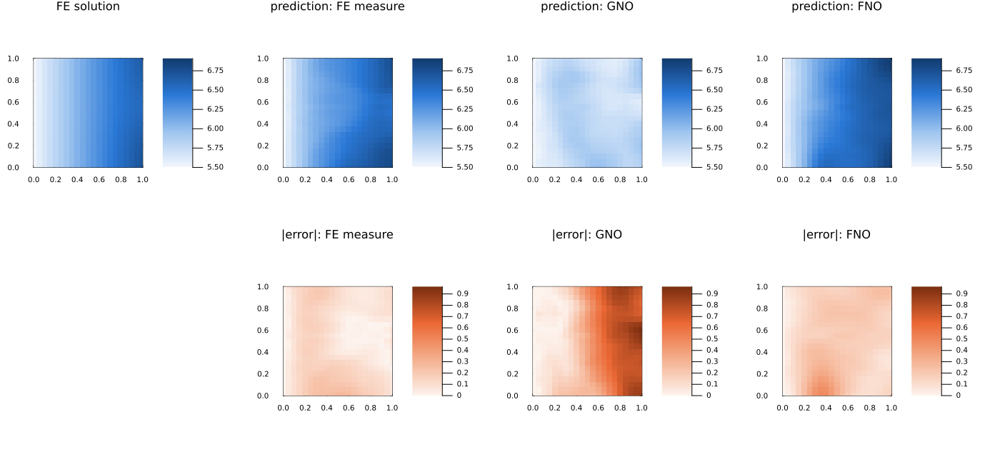
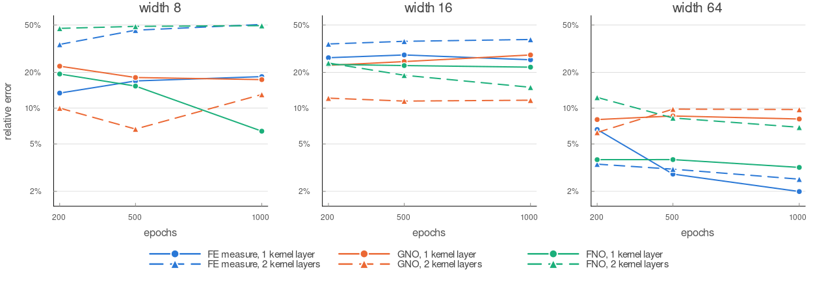
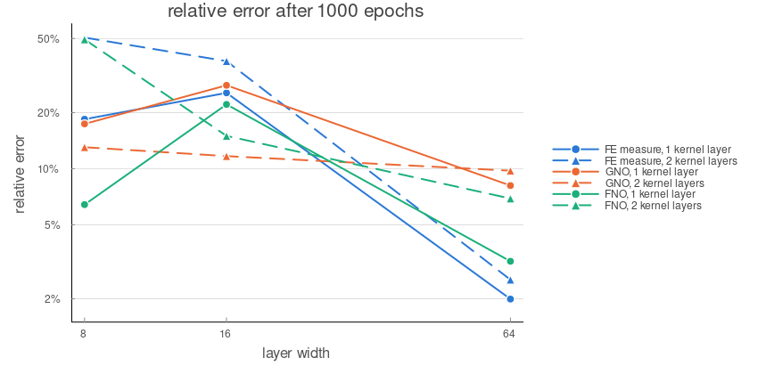
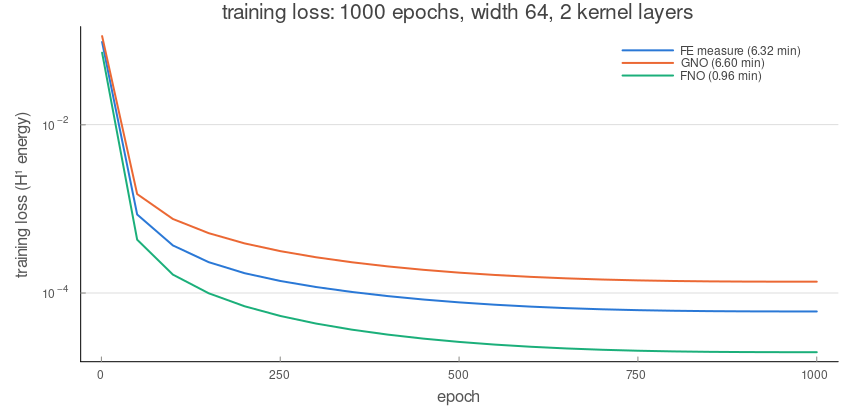

Preliminary results: Poisson equation
This page reports a parameter sweep on the parametric Poisson problem of the Poisson tutorial, run with test/poisson.jl. The sweep compares the three ways this package discretises the kernel operator, and shows how the accuracy depends on the number of epochs, the layer width, and the number of kernel layers.
Setup
Problem: the diffusion problem of the tutorial on $(0,1)^2$, with a $20\times 20$ Cartesian mesh and order-1 Lagrangian elements. The parameter $\mu\in[1,10]^3$ enters the diffusion coefficient, the Dirichlet datum and the Neumann datum.
Data: 50 training parameters and one test parameter that is not used in training.
Operators, all
KernelNeuralModels withtanhactivations, trained on the $H^1$EnergyLoss:- FE measure: the integral kernel discretised by FE quadrature on the mesh (
FunctionSpace); - GNO: the integral kernel discretised on a radius graph with radius $2h$ (
GraphInducedSpace); - FNO: a spectral kernel keeping 12 Fourier modes (
FourierStyle).
- FE measure: the integral kernel discretised by FE quadrature on the mesh (
Sweep:
- epochs $\in \{200, 500, 1000\}$;
- layer width $\in \{8, 16, 64\}$;
hidden_layersof length 2 or 3, i.e. 1 or 2 kernel layers between the lift and the projection.
That makes 18 configurations per operator, 54 runs in total.
Error measure: the relative nodal $\ell^2$ error $\|u_h - \hat u_h\|/\|u_h\|$ on the test parameter, computed from the
.vtufiles written byvisualise.
Each configuration was trained once, with a single random seed, and evaluated on a single test parameter. Differences of a few percent between neighbouring configurations are within the run-to-run variation one should expect, and only the larger trends below should be read as significant.
Best results
| Operator | Best configuration | Relative $\ell^2$ error | Relative max error |
|---|---|---|---|
| FE measure | 1000 epochs, width 64, 1 kernel layer | 2.0% | 4.3% |
| FNO | 1000 epochs, width 64, 1 kernel layer | 3.2% | 7.4% |
| GNO | 200 epochs, width 64, 2 kernel layers | 6.3% | 12.3% |
The fields below come from the 1000-epoch, width-64, 1-kernel-layer runs of each operator. The top row shows the FE solution and the three predictions, all on the same colour scale. The bottom row shows the pointwise error, also on a common scale.

The FE-measure and FNO predictions reproduce the solution almost everywhere. The GNO prediction has the right range at the left boundary but misses the increase towards $x = 1$. Its error is concentrated on the right half of the domain, where it reaches about 14% of the solution's maximum.
Effect of the number of epochs

- At width 64, more epochs help the FE-measure and FNO operators. The FE-measure operator with one kernel layer goes from 6.6% to 2.8% to 2.0%; the FNO with one kernel layer goes from 3.7% to 3.2%. The GNO does not improve: with one kernel layer it stays at about 8%, and with two kernel layers it goes from 6.3% to 9.7%.
- At widths 8 and 16, more epochs bring no consistent improvement. Some errors decrease, others increase: the FE-measure operator with 2 kernel layers and width 8 goes from 34% to 51%. These networks are limited by their capacity rather than by the training time, so training longer mainly fits the 50 training samples more closely.
Effect of the layer width

The width is the dominant parameter.
- Width 64 gives the best result for every operator. After 1000 epochs, all six width-64 runs are below 10%, against 6–51% at widths 8 and 16.
- The improvement is not monotone. Width 16 is often no better than width 8, and sometimes worse (e.g. the FE-measure operator with one kernel layer: 18% at width 8, 26% at width 16, 2.0% at width 64). The clear gain only comes with the jump to width 64.
Effect of the number of kernel layers
A second kernel layer gives no improvement at width 64. After 1000 epochs, the errors go from 2.0% to 2.5% (FE measure), 3.2% to 6.9% (FNO) and 8.1% to 9.7% (GNO).
At small widths the operators behave differently:
- The GNO benefits from depth. At 1000 epochs its error drops from 17% to 13% at width 8, and from 28% to 12% at width 16. A plausible reason is that its graph only connects points within $2h$, so each layer only exchanges information between neighbouring points, and a second layer doubles the distance information can travel.
- The FE-measure operator and the FNO get worse with depth at width 8, reaching about 50%. Their kernels are already global, so the second layer mainly adds parameters that a network this narrow cannot train well.
Efficiency
Training is cheap even in the most expensive configuration of the sweep: 1000 epochs, width 64, 2 kernel layers.
| Operator | XLA compilation | Training time | Time per epoch | Final training loss |
|---|---|---|---|---|
| FE measure | 0.06 min | 6.3 min | 0.38 s | $6.0\cdot 10^{-5}$ |
| GNO | 0.05 min | 6.6 min | 0.40 s | $1.4\cdot 10^{-4}$ |
| FNO | 0.03 min | 1.0 min | 0.06 s | $2.0\cdot 10^{-5}$ |

The XLA compilation through Reactant takes a few seconds and is paid once per training. After that, the FE-measure operator and the GNO train at about 0.4 s per epoch, and the FNO at about 0.06 s per epoch. The FNO is about 7 times faster, because its kernel is a truncated FFT rather than a sum over quadrature pairs or graph edges. For all three operators, most of the decrease in the loss happens in the first 200–300 epochs, and the curves have flattened by epoch
The training loss is not a reliable proxy for the test error. The FNO reaches the lowest training loss but a higher test error than the FE-measure operator (6.9% against 2.5% in this configuration), a sign that it fits the training samples more closely than it generalises. Evaluating a trained operator on a new parameter is a single forward pass, and its cost is negligible compared with training.
Summary
- On this problem the integral kernel discretised by FE quadrature gives the most accurate surrogate: 2.0% relative error with 1000 epochs, width 64 and one kernel layer.
- The layer width matters most. Width 64 is needed for errors below 10%, while the number of epochs only refines a network that is wide enough.
- A second kernel layer only helps the GNO, whose graph is local.
- Training takes minutes even in the most expensive configuration, and the FNO trains about 7 times faster than the other two operators.